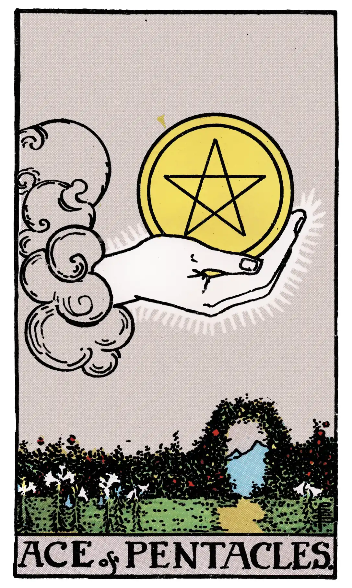

Ace of Pentacles

A.E.W.
Upright
Perfect contentment, felicity, ecstasy; also speedy intelligence; gold. It shews prosperity, comfortable material conditions, but whether these are of advantage to the possessor will depend on whether the card is reversed or not.
Additionally
The most favourable of all cards.
Recurrence
2 - Trickery.
3 - Small success.
4 - Favourable chance.
Reversed
The evil side of wealth, bad intelligence; also great riches. In any case it shews prosperity, comfortable material conditions, but whether these are of advantage to the possessor will depend on whether the card is reversed or not.
Additionally
A share in the finding of treasure.
Recurrence
2 - Enemies.
3 - Debauchery.
4 - Dishonour.
S.L.M.M.
Upright
Perfect Contentment, Felicity, Prosperity, Triumph
Reversed
Purse of Gold, Money, Gain, Help, Profit, Riches.
Description
A hand--issuing, as usual, from a cloud--holds up a pentacle.